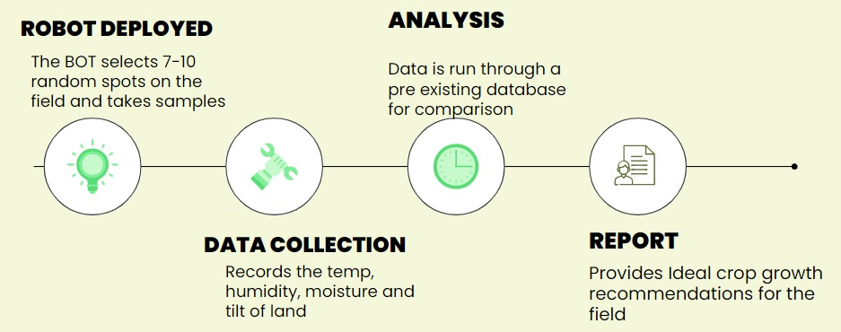

About
Problem
According to a study in 2022, the agricultural sector employed about 50% of the workforce yet only contributed to 17-18% of India’s overall GDP.With the erratic changes in the environment, soil testing can be a tedious task, inaccurate manual analysis could lead to loss of crops and low productivity on a large scale coupled with infertility of soil and soil erosion
Solution
To determine the soil characteristics we require the use of a robot crane with sensors such as NPK, temperature, humidity, tilt and moisture. The measured data is run through machine learning model and a report is produced which determines the best crop to grow in the given soil
Working
Relevance
- Industrial Relevance : Autonomous and highly accurate results with a concise report
- User Interface: Self enabled, sleek and compact design with an easy to website and mobile application that requires no prior knowledge
- Cost: Low manufacturing costs due to simple materials make the product easily usable for a large audience
- Portability: Simple cuboidal design enables the bot to host the computing and sensing equipment within its small and light package that can be transported with ease.
Data Analytics
The data uploaded to cloud is run through a machine learning model and graphs are generated which plot the humidity vs temperature conditions for a plant